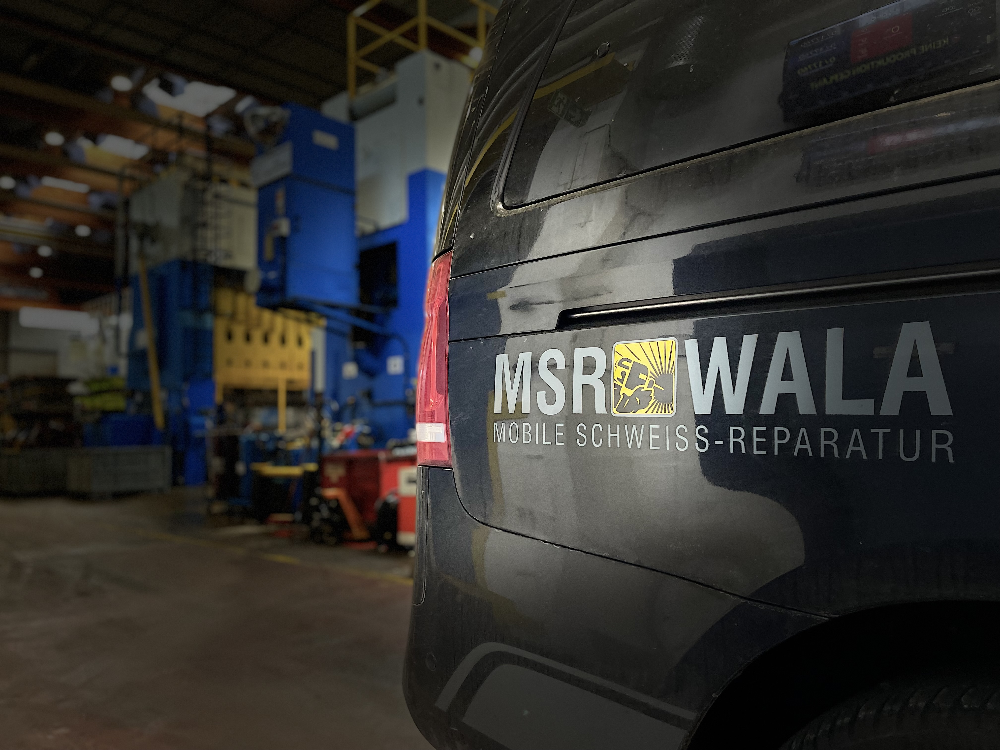

Nach elf Jahren Praxiserfahrung in der Schweißreparaturbranche (Pressen Reparatur-Service startete) er 2015 als Ein-Mann-Betrieb. Der schnelle Übergang zu einem Unternehmen mit mehreren Angestellten verdeutlicht die hohe Nachfrage nach qualifizierter Schweißservice in dem Maschinenbau und die fachliche Kompetenz des Gründers.
Unternehmensprofil
Unternehmen
Über uns · Fokus · Branchen · Hauptsitz

Über uns
Es ist eine beeindruckende Erfolgsgeschichte, wie aus der langjährigen Erfahrung von Mateusz Wala ein wachsendes Unternehmen wurde.
Qualität ist kein Zufall, sondern das Ergebnis von Erfahrung. Seit mehr als elf Jahren ist unser Unternehmen eine feste Größe im Bereich der Schweißreparatur-Services. Was mit der Leidenschaft für Metallbau begann, hat sich zu einem global agierenden Dienstleister entwickelt.
Heute betreuen wir über hundert Kunden weltweit. Unser Kern-Know-how liegt in der Instandsetzung von Großanlagen: Pro Jahr setzen wir 20 bis 30 Pressen instand und führen komplexe Reparaturen an unterschiedlichsten Maschinen und Bauteilen durch.
Fokus
Professioneller Service für Ihre Pressen & Anlagen – MSR Wala
Wir sind Ihr Spezialist für die Instandsetzung von Pressen und Industrieanlagen. Je nach Bedarf und Absprache führen wir Reparaturen fachgerecht direkt bei Ihnen vor Ort oder in unserer hauseigenen Werkstatt durch. Das Team von MSR Wala ist flexibel und reist dorthin, wo technische Unterstützung benötigt wird.
Unsere Leistungen im Überblick
- Nachhaltige Lösungen: Wir konzentrieren uns auf dauerhafte Instandsetzungen, um wiederkehrende Schäden an derselben Stelle konsequent zu vermeiden.
- Notfall-Management: Bei voller Auslastung Ihrer Maschinen ist oft keine sofortige Generalüberholung möglich. Als Ihr Partner bieten wir schnelle, sichere Notlösungen an, um Ihre Produktion aufrechtzuerhalten und eine fachgerechte Reparatur zu einem späteren, geplanten Zeitpunkt vorzubereiten.
- Prävention durch Rissprüfung: Um unvorhersehbare Stillstände zu vermeiden, bieten wir eine dokumentierte Rissprüfung Ihres gesamten Maschinenparks an – idealerweise im jährlichen Turnus.
- Modernisierung & Umbau: Planen Sie eine Modernisierung oder einen Umbau? Gemeinsam mit einem Partner-Ingenieurbüro führen wir Neuberechnungen durch, identifizieren Schwachstellen und setzen die notwendigen Optimierungen fachgerecht um.
MSR Wala – Wir halten Ihre Produktion in Bewegung.
Branchen
MSR Wala – Wir verbinden, was auseinandergegangen ist.
Ihr spezialisierter Partner für industrielle Instandsetzung und Modernisierung.
Seit vielen Jahren ist MSR Wala ein verlässlicher Name in der Industrie. Mit tiefem Know-how und handwerklicher Präzision sorgen wir dafür, dass Ihre Anlagen laufen – egal wie komplex die Herausforderung ist.
Zu 70 Prozent sind wir in der Automobilindustrie für namhafte Fahrzeughersteller und deren Zulieferer tätig. Darüber hinaus vertrauen Unternehmen aus der Hausgeräte-Produktion, Landtechnik, Baumaschinenindustrie und Holzindustrie auf unsere Expertise.
Instandsetzung von Umformanlagen
Wir sind Experten für die Reparatur von Anlagen in unterschiedlichsten Verfahren. Ob Schmiedepressen, Großpresse oder Spezialmaschine.
- Kalt- und Warmumformung
- Metallumformung
- Kunststoff- und Holzumformung
Herstellerunabhängiger Maschinenservice
Für uns spielen Modell, Hersteller, Baujahr oder Presskraft eine untergeordnete Rolle. In unserer Laufbahn haben wir nahezu jede Marke auf dem Markt erfolgreich repariert. Wir arbeiten zudem direkt im Auftrag von Maschinenherstellern, um für deren Endkunden maßgeschneiderte Lösungen umzusetzen.
Modernisierung von Hochregallagern
Ein Schwerpunkt der letzten Jahre ist die Instandsetzung und Modernisierung von Hochregallager-Anlagen. Wir bringen veraltete Systeme auf den neuesten Stand der Technik (Retrofit), individuell angepasst an die Wünsche der Hersteller und Betreiber.
Hauptsitz
Unser Standort: Im Herzen der Metropolregion – Weltweit im Einsatz
Strategisch vernetzt in Oftersheim
Die Ziesmer GmbH vereint regionale Präsenz mit internationaler Reichweite. Unser Hauptsitz in Oftersheim, direkt in der dynamischen Metropolregion Rhein-Neckar (Baden-Württemberg), bietet uns die ideale logistische Basis. Von hier aus steuern wir unsere weltweiten Einsätze und garantieren schnelle Reaktionszeiten für unsere Kunden – egal, wo auf der Welt wir gebraucht werden.
Werkstatt & Kapazitäten: Handwerk trifft Hochleistung
Das Herzstück unseres Standorts ist unsere 300 m² große, modern ausgestattete Werkstatt. Hier verbinden wir handwerkliche Präzision mit der Fähigkeit, auch „schwere Brocken“ zu bewegen:
- 15 Tonnen Kapazität: Unsere Infrastruktur ist darauf ausgelegt, Bauteile mit einem Einzelgewicht von bis zu 15 Tonnen sicher zu handhaben, zu reparieren oder komplett neu anzufertigen.
- Full-Service-Instandsetzung: Ob geplante Generalüberholung oder eilige Sonderanfertigung – in unserer Werkstatt finden wir die Lösung für Ihre mechanischen Herausforderungen.
- Flexibel & agil: Wir reagieren schnell auf Ihre Anforderungen. Was in der Werkstatt vorbereitet wird, bringen unsere Teams direkt bei Ihnen vor Ort zum Einsatz.
Regional verwurzelt, global agierend
Wir sind stolz auf unsere Wurzeln in Baden-Württemberg. Diese Bodenständigkeit und den hohen Qualitätsanspruch „Made in Germany“ tragen wir bei jedem Projekt in die Welt hinaus.
Sie haben ein Projekt für uns?
Besuchen Sie uns in Oftersheim oder fordern Sie unser mobiles Team an. Wir sind bereit, wenn Sie uns brauchen.